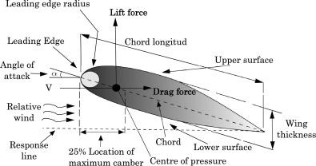

Table of content |
|---|
| Abstract |
| Introduction |
| how lift and weight affect areodynamics |
| thrust and weight in more detail |
| Conclusion |
| References |
In summary, this article explores how the four fundamental forces of flight affect an airplane’s performance. It discusses drag, lift, weight, and thrust and the
physical principles behind them, including Bernoulli’s principle and Newton’s three laws. The article also delves into the subsections of each force, such as parasite
drag and induced drag.
In this article, I will discuss how aerodynamics affects airplanes by exploring basic concepts and delving deeper into the physical principles behind them.
The first key topics I want to address are the four fundamental forces acting on airplanes: thrust, drag, lift, and weight.
Thrust and drag are similar in that they both act along the same axis but in opposing directions.
Thrust is the forward force produced by the engine, rotor, or propeller, acting parallel to the airplane's longitudinal axis.
In contrast, drag is the resistive force caused by air resistance and disruption from the airplane's wings and fuselage.
Drag opposes thrust and acts parallel to the relative wind.

Similarly, lift and weight are fundamental opposites. Lift is an aerodynamic force generated by the wings as air flows over them, acting
perpendicular to the relative wind. Weight, on the other hand, is the gravitational force pulling the airplane downward. For an airplane
to achieve stable flight, the lift must balance the weight, and the thrust must overcome the drag
(Smithsonian National Air and Space Museum, 2024).
Aerodynamics is the study of how air interacts with objects in motion, and its principles govern the flight of the airplane. When looking
at the theory of lift, the shape of the wings is a very important aspect. The wings are designed with an airfoil shape—curved on top and flatter
on the bottom. This shape allows air to move faster over the top surface than the bottom, causing a pressure difference, which ultimately
results in lift. This phenomenon is called Bernoulli's principle, and it is a crucial aspect of flight
(NASA, 2024). Additionally, Newton’s Third Law contributes to lift, as the deflection of air downwards by the wing
generates an equal and opposite reaction force (StudyFlight, 2024).
Drag, meanwhile, is made up of two forms of drag. These are called parasite drag and induced drag. Parasite drag arises as a byproduct of the
airframe of the aircraft but is independent of the aircraft’s lift. This can be described through this type of drag being proportional to the square
of the aircraft’s speed, meaning as the aircraft goes faster, the resistance grows exponentially. However, this type of drag can be reduced through
methods such as skin interference, where a smoother aircraft design decreases resistance and increases speed
(Academy of Model Aeronautics, 2024).
Induced drag, on the other hand, is directly related to lift. It occurs as a result of the wing generating lift, creating wingtip vortices—swirling air
patterns at the tips of the wings. These vortices form when high-pressure air beneath the wing meets low-pressure air above it, spilling over and
causing energy loss in the form of drag. Induced drag is more significant at lower speeds, especially during take-off or landing when the airplane is
flying at a high angle of attack. To counteract induced drag, engineers have developed innovations like winglets, which reduce wingtip vortices and
improve fuel efficiency by allowing airplanes to cover greater distances with less energy expenditure
(Quora, 2024).
Thrust, the force that propels an aircraft forward, is produced by its engines. Based on Newton’s Third Law, when air or exhaust gases are expelled
backward, a corresponding forward reaction force is generated, enabling motion. Jet engines excel at delivering high levels of thrust, making them ideal
for fast-moving aircraft. Turboprop engines, on the other hand, drive propellers and are better suited for lower speeds and improved fuel efficiency, often
used in regional or smaller planes. Similarly, piston engines power propellers and are commonly used in light aircraft. Each engine type is tailored to
specific needs, whether speed, range, or efficiency is prioritized (Sheffield, 2024).
Weight is the force that acts in the downward direction in aviation. It is seen through the mass of the aircraft being multiplied by the gravitational force
of the Earth, which is 9.81 m/s². This can be expressed by the general equation
w = mg. The force of weight acts at the diametric center of the plane, known as the center of gravity, where the plane’s mass is balanced.
The location of the center of gravity is crucial because it determines how the aircraft responds to control inputs and external forces. As fuel is burned
in flight, the weight decreases, which can alter the center of gravity. This is a significant factor pilots must consider to maintain balance, as lift must
counteract weight. This balance is especially critical during maneuvers like climbs or descents to ensure safe and efficient flight operations
(NASA, 2024).
The science of aerodynamics, which governs airplane flight, is rooted in Newtonian mechanics and fluid dynamics. Newton’s First Law states that an aircraft
stays in motion or at rest unless acted on by an unbalanced force, while his Second Law relates the force needed for speed changes to the aircraft’s mass.
Newton’s Third Law is vital, showing that downward-deflected air from wings creates an equal upward force, generating lift
(Liu et al., 2019).
Bernoulli’s principle explains how faster airflow over a wing’s curved top reduces pressure, creating lift. The Continuity Equation and Conservation of Energy
further describe how airflow accelerates over curved surfaces while total energy remains constant. These principles form the foundation of flight mechanics
(Smithsonian National Air and Space Museum, 2024).
In conclusion, understanding the four fundamental forces—thrust, drag, lift, and weight—is crucial for comprehending aerodynamics and their effect on an airplane's flight dynamics .